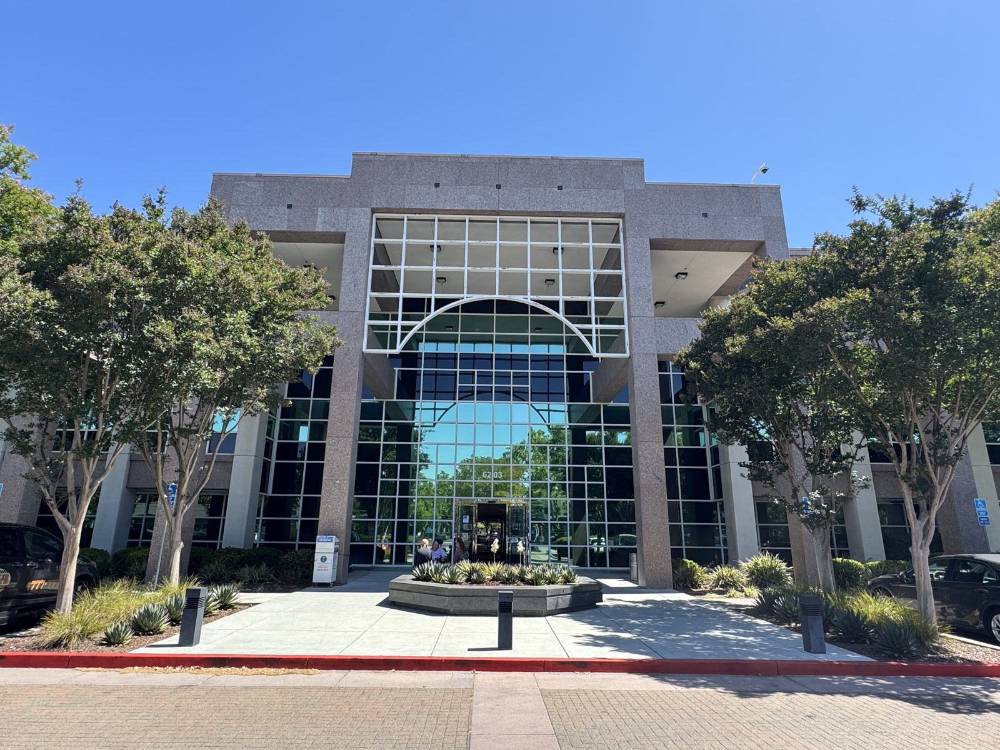
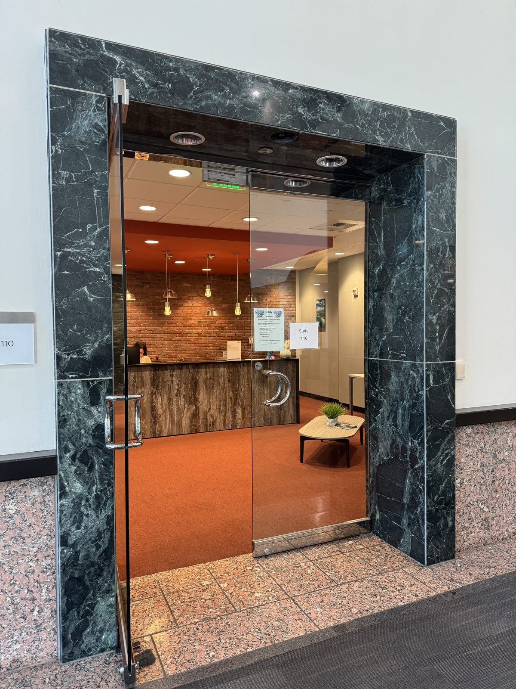

Atlas Intensive Care is a full-service medical practice led by Dr. Arun Sharma, MD — a USCIS-designated Civil Surgeon and board-certified internist with over 20 years of experience. We perform I-693 immigration medical exams, comprehensive primary care, and chronic disease management across three Bay Area locations.
Form I-693 · Latest Edition 01/20/25
Includes physical exam + sealed I-693 form
Federally designated. Authorized to perform I-693 exams.
Former U.S. Army Major. Honorable Discharge with Commendation Medal.
In-clinic, telemedicine, concierge & home visits.
English · Spanish · Hindi · Punjabi · Mandarin · Vietnamese

Walk into Atlas Intensive Care and you'll notice the difference immediately — small, calm, focused. No crowded waiting rooms, no hurried check-ins. Just a space designed around the people we care for.
Free parking is available at all three of our Bay Area locations. Public transit access from downtown San Jose makes us easy to reach without a car.
For applicants pursuing permanent residency in the United States, Atlas Intensive Care offers efficient, accurate, USCIS-compliant Form I-693 medical examinations. Most exams are completed in a single visit, with the sealed envelope ready as soon as your lab results return.
Our patients consistently tell us the same thing: clear communication, no surprises, and the peace of mind of knowing the paperwork is done right the first time.
In-house lab package: $250. Most patients add our convenient lab draw — TB QuantiFERON, syphilis, and immunity profile, all done at the office. Direct results to us in about 4 days. Insurance is also accepted at outside draw centers; coverage and pricing vary.
While we're best known for I-693 exams, Atlas Intensive Care is a complete primary care practice serving patients of all ages. From annual physicals to managing complex chronic conditions, we provide the kind of personal attention that has become rare in modern healthcare.
Comprehensive wellness exams, preventive screenings, and routine check-ups for adults and seniors.
Personalized care plans for Type 1, Type 2, and pre-diabetes. A1C monitoring and lifestyle support.
Blood pressure management, cardiovascular risk assessment, and coordinated specialist referrals.
Holistic approach combining nutrition, behavioral support, and modern medical options including GLP-1 medications.
Adult immunizations, flu shots, COVID-19 boosters, HPV vaccines, and travel-related vaccinations.
School enrollment physicals, sports clearances, and pre-employment health screenings.
Secure video visits from anywhere in California. Convenient for follow-ups, prescription refills, and minor concerns.
A more personal practice model with extended visits, direct doctor access, and care that revolves around your schedule.
For homebound patients, seniors, and those who simply prefer the comfort of their own home, we bring care to you.

Fast where it should be, unhurried where it matters. We get you scheduled quickly and turn results around promptly — but the visit itself is never rushed: 30 minutes for a new patient, 20 for a follow-up. That difference is why patients tell us they feel heard for the first time in years.
Whether you're managing a chronic condition, completing an immigration medical exam, or simply trying to stay healthy, we believe time spent listening is time well spent.
Free parking at all three clinical locations. Public transit accessible from downtown San Jose.
18 South 2nd Street
San Jose, CA 95113
Mon–Fri: 10:00 AM – 3:00 PM
Sat–Sun: By appointment only
6203 San Ignacio Avenue
San Jose, CA 95119
Mon–Fri: 10:00 AM – 3:00 PM
Sat–Sun: By appointment only
900 East Hamilton Avenue
Campbell, CA 95008
Mon–Fri: 10:00 AM – 3:00 PM
Sat–Sun: By appointment only
Whether you need an I-693 exam this week, a new primary care provider, or ongoing care for a chronic condition, we'd be honored to care for you and your family.